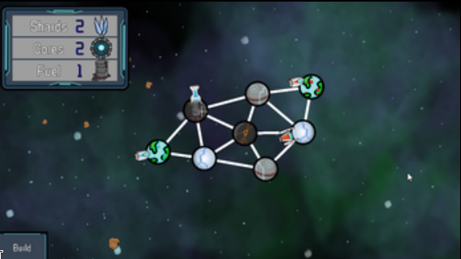
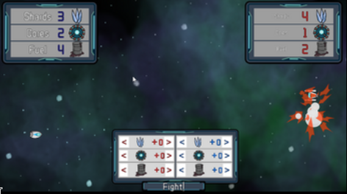

Tiny Galaxies

Description
[REQUIRES two players] #BTPGameJam A Turn-based tactics game for two players, about galactic conquests, on a tiny scale. Made during the BlackThronProd February 2019 game Jam. The theme was Tiny Planets. To fit the theme each planet can only support two ships and only provides one resource per turn. This forces each player to think carefully about their moves. A future update is planned to add an AI opponent. Free Assets used (not created during the Jam): Ambient_Hum_Pitched - you tube audio library Forboding_Resonance - you tube audio library ZCOOLQingKeHuangYou-Regular SDF - google fonts
Screenshots & Images


Play The Game
Feedback & Comments
"I didn't have someone else to play with, so I tried it against myself. I'm glad it was turn based haha. IT was very well done and I liked how it was well balanced in terms of strengths between the different resources. It was a lot of fun and I'll save it to try with a friend later! Only critique is that the blaster sound on the main menu is pretty annoying when you're trying to read the how to play, which I don't think needs to be so long by the way. The game was mostly intuitive and you just needed a quick playable tutorial and that would be it. Great game dude, good job!" - The Last Battle
"Thanks for the feedback. I will adjust the blaster sound. I wanted to put in a playable tutorial but ran out of time during the Jam. I am glad you liked it." - IllogicalDesignsDeveloper